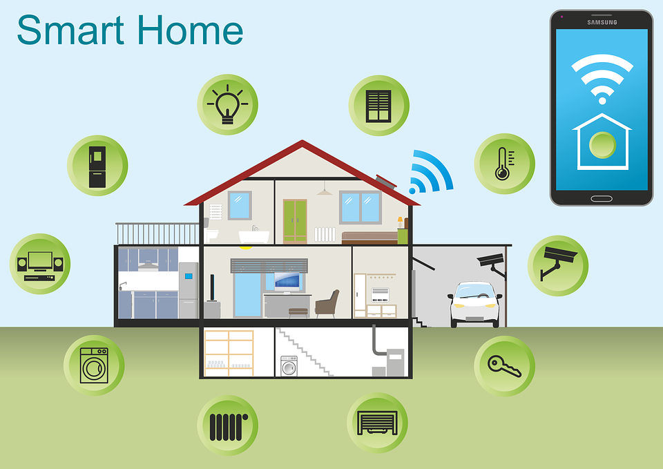

What is the Internet of Things?
The phrase 'Internet of Things', or IoT, is used to describe objects or devices that can communicate. This includes smartphones and computers but has more recently shown to include wearable technology, coffee machines, doorbells and even smart salt shakers.
By connecting these devices, data can be used to learn about a process or carry out benefcial tasks. For example, your wearable sleep tracker could detect that you have woken up and instruct your coffee machine to have a brew ready for you.
Other data may be collected in order to benefit consumers, such as, fitness trackers measuring, and providing information on, your physical activity.


What happens to your data?
Data collected by devices may share this data freely with other devices connected to the Internet of Things. Additionally, data collected may be used to help advertise to other buyers.
Data collected can be analysed to make processes more efficient. Organisations may be able to alter the way they do things to improve their product or service. Analytics performed on this vast amount of data can be used to help understand trends and patterns in order to make positive change.
How does the Internet of Things affect you?
The Internet of Things connects machines and systems together so they can easily transfer information and take actions to enhance efficiency and productivity. This may include:
- Automatic sensing of vehicles to better improve signal control and traffic.
- Improving healthcare by remote monitoring of patients.
- Smart cars, and other vehicles, that can assist in changing direction or speed of the vehicle and requesting assistance if necessary.
The development of the Internet of Things will also improve daily life within our own homes.
- Automatic thermostats can regulate temperature and save money/energy/
- Better security can be offered by continuous surveillance and alerting authorities when necessary.
- Reminders of mundane tasks that are likely to be forgotten can be given based on personal calenders.
